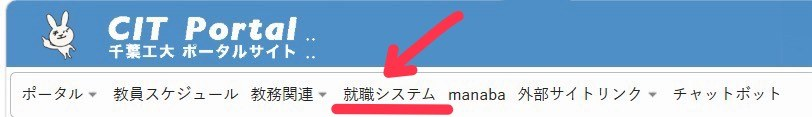
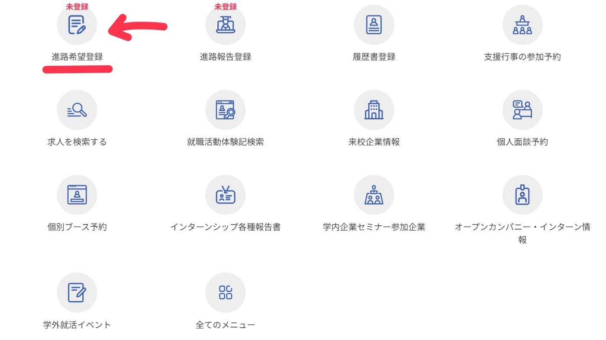
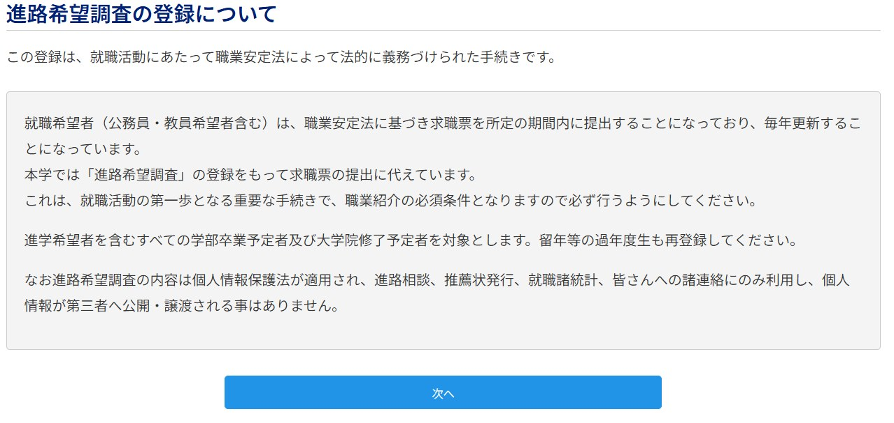
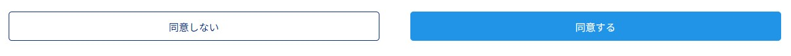
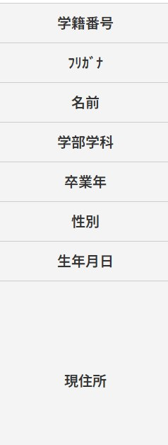
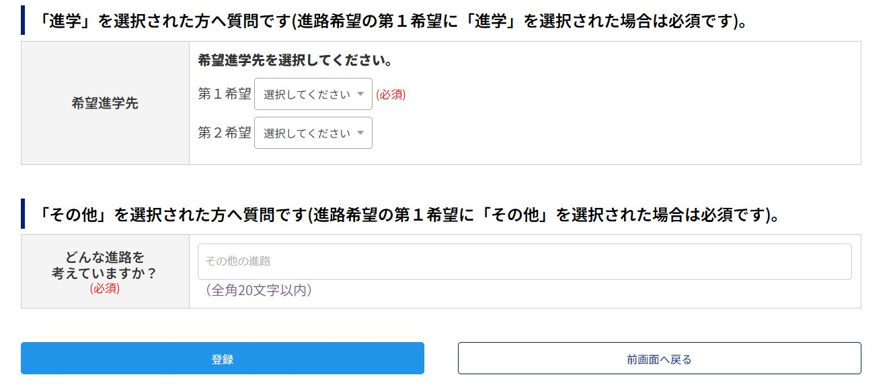

学内支援まとめ
大学には、無料で使える就職支援がたくさんあります。就活中・後の先輩が「利用した・利用したい」と答えた割合が高い順に並べました。
先輩と2年生のアンケートから
2年生28%学内の就職支援をどれも知らない
2年生12%個人面接講座を知っている
先輩39%個人面接講座を利用した・したい
グループ13のアンケート(就活前の2年生81人・就活中/後の先輩18人)より
| 支援 | どんなもの? | 利用した・したい先輩 |
|---|---|---|
| 学内企業説明会・合同企業セミナー | 大学に企業が集まり、仕事内容や採用について説明してくれる | 72% |
| 個人面接講座 | 一対一で面接の練習ができる | 39% |
| 適性検査対策(SPI等) | Webテストの対策講座 | 28% |
| 履歴書・ES対策講座 | 書類の書き方を教えてもらえる | 22% |
| 模擬面接・GD対策講座 | 集団面接やグループディスカッションの練習 | 22% |
| 就職マナー講座 | メールや電話、身だしなみなどのマナー | 11% |
| インターンシップ支援 | インターンの探し方や応募の相談 | 6% |
| OB・OGとの交流 | 千葉工大の卒業生から仕事の話を聞ける | 6% |
| Uターン・Iターン支援 | 地元や地方での就職の相談 | - |
割合は就活中・後の先輩18人の回答です。
使うには:まず進路希望登録をしよう
多くの支援は、CITポータルで進路希望登録をしておくと案内が届きます。登録はいつでもでき、手順は6ステップ、5分ほどで終わります。下の手順を見ながら、今のうちに登録しておきましょう。
-
1CITポータルの「就職システム」を開く
CITポータルにログインして、上のメニューにある「就職システム」を選びます。
-
2「進路希望登録」を選ぶ
就職システムのメニューから「進路希望登録」を選びます。まだ登録していないと「未登録」と表示されています。
-
3説明を読んで「次へ」
進路希望調査の登録についての説明を読んで、「次へ」を押します。
-
4「同意する」を押す
内容を確認して「同意する」を押します。
-
5自分の情報を確認・入力する
学籍番号・名前・学部学科・卒業年・住所などを確認し、足りないところを入力します。
-
6進路希望を選んで「登録」
第1希望の進路を選びます。「進学」なら希望進学先を、「その他」なら考えている進路を入力して、「登録」を押せば完了です。まだ決まっていなくても、今の考えで大丈夫です。
分からないことはキャリアセンター(就職課)で相談できます。
【チームメモ】それぞれの講座の開催時期と申し込み方法を就職課で確認して、表に追加してください。